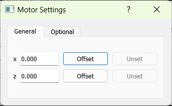

Motor GUI
Creating a Motor GUI
To create a motor GUI subwindow:
Launch lys and open the
proc.pyfile (press Ctrl+P).Add the following code to define a class for the motor GUI subwindow and save it (press Ctrl+S).
from lys.widgets import LysSubWindow
from lys_instr import gui, dummy
class Window(LysSubWindow):
def __init__(self):
super().__init__()
motor = dummy.MultiMotorDummy("x", "y") # Create the motor instance
motorGUI = gui.MultiMotorGUI(motor) # Create the motor GUI
self.setWidget(motorGUI) # Embed the motor GUI in the lys subwindow
self.adjustSize()
Calling Window() in the lys command line launches the GUI subwindow as follows:
You can input target positions for each axis and click the Go button to start motion, the Stop button to halt motion, or set the step size and use the arrow buttons to jog each axis.
The indicator next to each axis shows its connection status—green for a successful connection, and red for a disconnected or error state.
Clicking the Settings button opens a dialog.
{kind=link}
Within the dialog, you can offset each axis. Clicking the Offset button defines the current value of the axis as zero and records the offset value in the box to the left. Clicking the Unset button removes the offset and restores the true values. The Now at and Move to fields in the main window are automatically updated to reflect the current offset.
Customizing Set, Jog, and Offset
Enable the “set”, “jog”, and “offset” functions for specific axes when you instantiate the motor GUI. For example:
from lys.widgets import LysSubWindow
from lys_instr import gui, dummy
class Window(LysSubWindow):
def __init__(self):
super().__init__()
motor = dummy.MultiMotorDummy("x", "y", "z")
# Specify which axes are settable, joggable, or offsettable using axisNamesSettable, axisNamesJoggable, and axisNamesOffsettable
motorGUI = gui.MultiMotorGUI(motor, axisNamesSettable=("x", "y"), axisNamesJoggable=("x"), axisNamesOffsettable=("x", "z"))
self.setWidget(motorGUI)
self.adjustSize()
The resulting GUI window appears as follows. Now, only the “x” axis can be jogged, and only the “x” and “y” axes can be set:
In the Settings dialog, only the “x” and “z” axes are available for offset control:
{kind=link}
The Offset button sets the current position value of the axis to zero and records the offset value in the box to the left. The Unset button removes the offset for the axis and restores its true position value.
Using Bookmarks
To enable bookmark management, when you create the motor GUI:
Set
memoryto"bottom"or"right"to choose the memory panel position.Provide a file name or full path for
memoryPath.
from lys.widgets import LysSubWindow
from lys_instr import gui, dummy
class Window(LysSubWindow):
def __init__(self):
super().__init__()
motor = dummy.MultiMotorDummy("x", "y", "z")
# Setting memory to "bottom" or "right" and providing a file name or full path for memoryPath
motorGUI = gui.MultiMotorGUI(motor, memory="bottom", memoryPath="YourMemoryFileName")
self.setWidget(motorGUI)
self.adjustSize()
The memory panel appears in the motor GUI:
Clicking Save adds a bookmark for the current values of all axes to the list.
You can optionally add a description using the memo input field.
When the first bookmark is added, a file with the specified name is automatically created to store the bookmarks.
If only a file name is provided for memoryPath, the default path is .lys/.lys_instr/YourMemoryFileName.lst.
To restore a position, select a bookmark from the list and click Load. To remove a bookmark, select it and click Delete.
Bookmarks always store the absolute values of each axis, so the offsetting logic does not affect them.